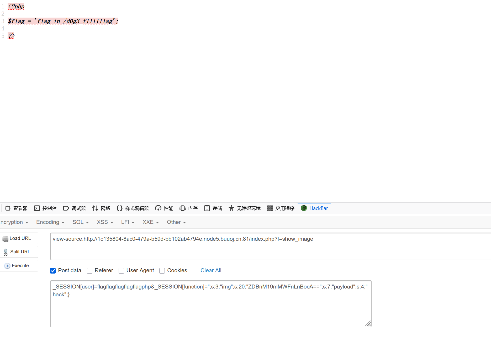

BUUCTF-Web-[安洵杯 2019]easy_serialize_php1
本文为记录个人信安小白的刷题路程，大佬勿喷，也同时希望文章能对您有所帮助
打开靶机，点击超链接可以看到源码，
代码审计，
1 |
|
根据提示查看php配置信息（?f=phpinfo）
找到flag相关php文件，
根据上面代码分析，我们注意用到这一句：
1 | echo file_get_contents(base64_decode($userinfo['img'])); |
我们需要构造img的值，去输出我们需要的内容，
有两个方式可以更改img的值：
1.GET传参img_path，$_SESSION['img'] = sha1(base64_encode($_GET['img_path']));
但是传入的数据要经过base64加密和sha1加密，echo file_get_contents(base64_decode($userinfo['img']));只对base64解密，
所以这个方式不行。
2.POST传参修改$_SESSION['img']，
1 | extract($_POST); |
1 | $serialize_info = filter(serialize($_SESSION)); |
这个地方可以利用反序列化字符逃逸漏洞。
构造payload
d0g3_f1ag.phpbase64编码ZDBnM19mMWFnLnBocA==，
1 | _SESSION[user]=flagflagflagflagflagphp&_SESSION[function]=";s:3:"img";s:20:"ZDBnM19mMWFnLnBocA==";s:7:"payload";s:4:"hack";} |

再将获得的flag文件路径base64加密，重新构造payload，
1 | _SESSION[user]=flagflagflagflagflagphp&_SESSION[function]=";s:3:"img";s:20:"L2QwZzNfZmxsbGxsbGFn";s:7:"payload";s:4:"hack";} |
获得flag
PHP反序列化字符逃逸漏洞
核心概念
反序列化字符串逃逸漏洞的本质是：序列化字符串的”长度标识”与”实际内容长度”不一致，导致PHP在反序列化时错误地解析数据结构，使得攻击者能够”吞掉”部分原始序列化字符串并注入恶意序列化数据。
产生条件
1.序列化操作在过滤之前：先对数组进行序列化，然后对序列化后的字符串进行过滤处理；
2.过滤操作会改变字符串长度：过滤函数会删除或替换特定字符，导致字符串长度变化。
原理
正常序列化结构
PHP序列化字符串有严格的格式：
1 | // 数组序列化 |
漏洞利用过程
（1）构造恶意输入
恶意构造：
1 | _SESSION[user]=flagflagflagflagflagphp |
（2）正常序列化
1 | // 序列化后 |
（3）过滤操作filter()函数删除所有的'flag'和'php'：
原字符串："flagflagflagflagflagphp"（23字符）
删除5个"flag"（4×5=20字符） + 1个"php"（3字符）
剩余：””（空字符串，0字符）
但长度标识仍然是s:23
1 | a:3:{ |
（5）反序列化时的错误解析
PHP会：
读取s:23:""，但发现只有0个字符（””）
继续向后读取23个字符来凑够23字符的长度
这23个字符恰好是：;s:8:"function";s:38:"
最终重组为：
1 | a:2:{ |
这样就利用巧妙的闭合改写了img的值